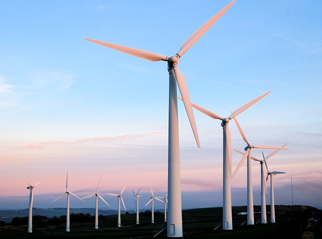

O vento faz as pás girarem que também faz girar o rotor (Rotor é tudo que gira em torno de seu próprio eixo produzindo movimentos de rotação, é usado em qualquer máquina rotativa como turbinas, compressores, redutores, entre outros, possuem eixos rotativos), que transmite a rotação ao gerador, que, por sua vez, poça converte essa energia mecânica em energia elétrica.
As melhores regiões do Brasil para a instalação de parques eólicos estão no litoral. A fim de informações para estudos, simples conhecimento ou informações para tomadores de decisão na identificação de áreas adequadas para aproveitamentos eólio-elétricos, seguem os melhores trechos. Abaixo estão apenas aqueles trechos que possuem média anual superior a 8,0 m/s de velocidade do vento, medidos a 50 metros de altura.
Limpas e renováveis, não emite gases poluentes e nem gera resíduos. Diminui a emissão de gases de efeito estufa, traz investimentos para regiões desfavorecidas, gera empregos, reduz a dependência energética do exterior.
Algumas desvantagens são: Intermitência dos ventos, poluição sonora, poluição visual, acidente com pássaros